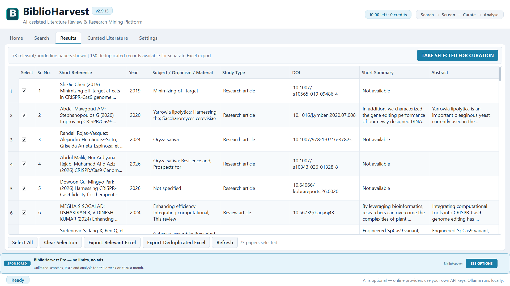
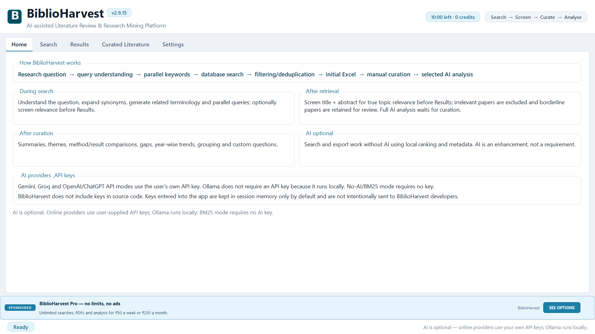
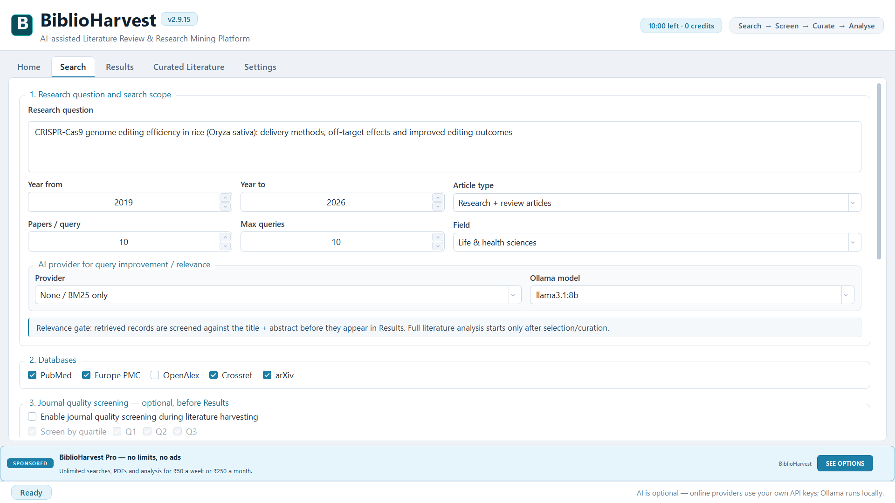
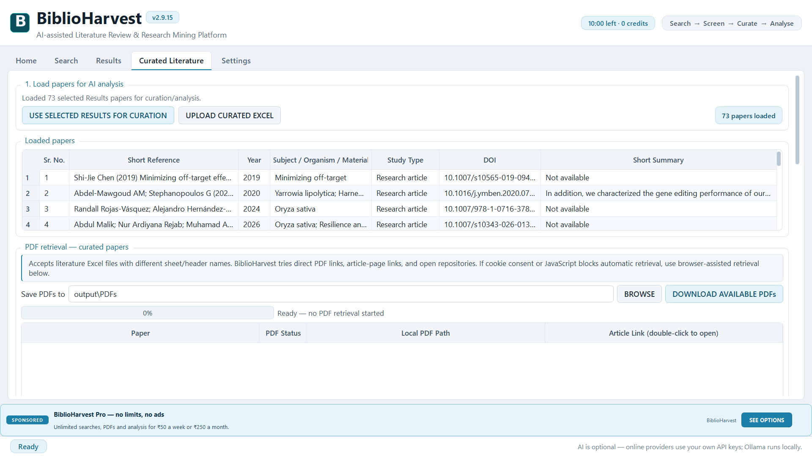
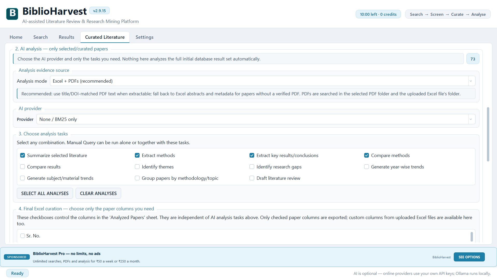
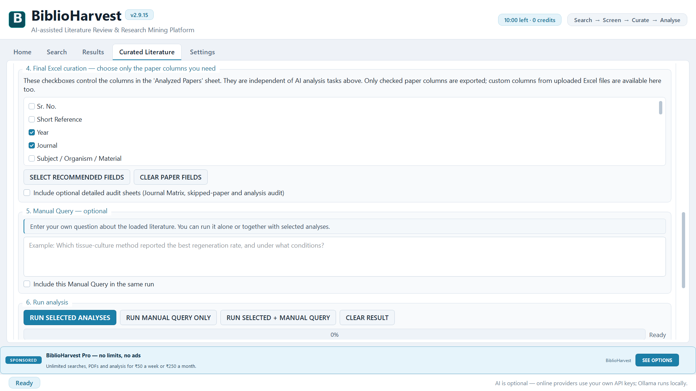

For Windows 10 & 11
BiblioHarvest turns a research question into database queries, collects the results, ranks them for relevance, and gives you one place to screen, curate and export them — with a record of every decision you made.
No account. No developer server. Your questions, results and API keys stay on your PC.

It is the copy-paste between four search boxes, the spreadsheet that nobody can reconstruct six months later, and the supervisor asking how you got from 1,400 records to 62.
PubMed, Europe PMC, OpenAlex, Crossref and arXiv each return a different shape. Manual merging means duplicates and inconsistent fields before the screening even starts.
Decisions end up in ad-hoc columns, journal metrics are looked up by hand, and the sheet you hand over cannot show why a paper was kept or dropped.
PRISMA needs counts and reasons at every stage. Rebuilding them afterwards from memory is the step that turns a weekend into a month.
Four steps, one window, nothing to install besides the app.
Type the research question in plain language. The app builds keyword variations and boolean queries for each database.
Queries run against PubMed, Europe PMC, OpenAlex, Crossref and arXiv. Duplicates are removed and records are ranked for relevance to your question.
Work through the table, accept or reject records, and keep a separate curated set. Journal quartile and impact-factor columns record where each value came from.
Produce an initial screening workbook, a curated workbook and an analysis sheet with your decisions — ready for a supervisor, an appendix or a PRISMA flow diagram.
Everything needed for screening and curation. Nothing that requires an account.
One question, five sources, deduplicated and relevance-ranked by a local engine. No API key is required for searching.
Accept, reject, revisit. Every row keeps its source, its identifiers and your decision, so the trail survives to the appendix.
Quartile and impact-factor columns are filled where publicly available, each value tagged with the source it came from — and left blank rather than guessed.
Initial screening, curated set and analysis sheets as clean Excel workbooks, with the columns you choose at export time.
Add your own Gemini, OpenAI or Groq key — or run a local Ollama model — for query expansion, relevance screening, method/result/limitation extraction and summaries. Leave it unset and the local engine does the work.
Open-access PDFs are fetched for the curated set, with a browser-assisted mode for publisher pages that need a click-through.
Your data lives in %LOCALAPPDATA%\BiblioHarvest. There is no BiblioHarvest account
and no server holding your research.
Light and dark themes, an option for larger text, and a reminder of the remaining allowance in the status bar.
Screen the queue without leaving the keyboard — accept, reject and move on, row after row.
The light theme, from first query to exported workbook.





The AI features are a plug-in, not a dependency. You choose the provider and supply your own key; the app never ships one.
Keys are stored locally and used only for the provider you picked. Everything else in the app works with no key at all.
Free to install, with clear limits and no subscription. Pro removes them.
Searching, screening, curation and export are included, plus three free uses each of AI with your own key, PDF download and analysis. After that, one short sponsored view unlocks one use — up to five a day.
When a long screening session outlasts the daily allowance, credit packs add time. Purchases are handled by the Microsoft Store; credits do not expire.
Institutional licences cover a group, a lab or a library. Get in touch with the number of people and devices.
| Operating system | Windows 10 version 1809 (build 17763) or later, or Windows 11 |
|---|---|
| Architecture | 64-bit (x64) |
| Memory | 4 GB RAM |
| Disk | About 700 MB |
| Connection | Internet needed for database searching, PDF retrieval and any AI provider you enable. Screening and export of collected records work offline. |
| Accounts | None for the app. A Microsoft account is used by the Store for the download and any purchase. |
| Current release | Version 2.9.15, distributed through the Microsoft Store |